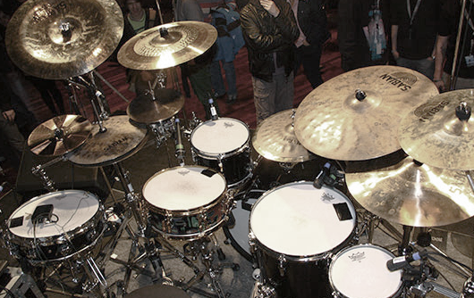

Main Menu

Drum rudiments are patterns originally made for the snare drum in marching bands.
A rudiment is typically used for exercising the hands, as well as practicing patterns played by both hands.
Although originally made for the hands, a rudiment can be exercised by the feet and all the limbs on a drumset
There are about 40 written drum rudiments. Drummers often mix and match rudiments to create there own exercises or patterns.
Some of the rudiment categories include:
Pattern that has hands alternating between single hits
Pattern that has hands alternating between double hits
Patterns that mix up both single and double strokes to make unique pattern
pattern that has both Left and Right hands hitting at the same time with one hand hitting slightly accented and ahead of the other
There are many more rudiments, and rudiments within these categories. You may easily find these in searches through out the internet.
A drum beat is simply a rythmic pattern played repeatedly or looped within a time signature. This is the technical term.
A drum beat is a groove that pulsates a song. The driving energy of a song.
Depending on the style of music, a drum beat may be used to help drive the song, whether a fast or slow tune.
Yet, drums are not always played with a drum beat, as often with jazz or orchestral music for example. The drums or percussion are used for accented sounds and comping of the tune
Comping is a term used in jazz that the rythem section (drums) uses to support the feel of the song. Typically comping is used as improvisation.
An ostinato used on a drumset is typically used for excerise and practice for independence and dexterity of the limbs.
Ostinatos are typically played by 2 or 3 limbs while the drummer reads a sheet of music with the 4rth Limb, thus demanding independence from that limb
Although primarily used for independence exercises, ostinatos are great in learning some styles that demand independence such as jazz and latin (samba, songo, etc.).
In the Examples listed:
The Single stroke is a repeatedly alternating stick pattern between hands
This is a very basic rudiment, yet difficult to master speed and smooth sound
Often drummers will use double rolls for ease of speed, and singles for nice loud rolls
The six stroke open roll is played by bouncing each stick twice in an equal manner. Resuting in the same level of sound and tone if played on the same drum.
The paradiddle combines double strokes and single to make one unique pattern. The > symbols indicate to play that note accented or a bit louder.
The single stroke four rudiment was originally made for the hands, later to be used be drummers. Single stroke rudiments are a great execrise for stamina of the feet.
The single stroke seven rudiment also was made for the hands for marching band. This is another rudiment to help increase stamina in the feet. Especially for double bass players.
This is a simple rudiment to apply on the drumset. For every Accented notation ">". Kick the bass drum. For every first Left hand hit, accent it on the snare drum. Nice little basic groove.
A drag is an easy rudiment to play. The double bounce is shown here to alternate the left hand followed by a Right accent and then vice versa. You can use this to play simple fills by playing the bounces on a tom and the accents on the snare. Or another example, to play the bounces on the snare and the accents on a crash cymbal with a kick on the bass drum.
The basic Jazz pattern on the drumset is mainly a swing pattern on the ride cymbal and a click of the hi-hat with the left foot on beat 2 and 4. This is a repeating pattern(ostinato of sorts) that you may play comping, or any pattern with the left hand
The jazz waltz pattern is similar to the basic pattern except the time signature is 3/4 instead of 4/4. Typically a waltz like feeling is produced by playing the left foot hi-hat click on beat 2 and 3.
Just about the standard beat for any basic rock, pop, funk, or hip hop song.
Another basic beat. This one is a half time feel. A little fatter bottom sound.
A very basic funk pattern using the opening slosh of the hi-hat with 16th notes played on the hi-hat as well.
A basic funk pattern using rolls on the hi-hat repeating the same pattern on the kick and snare.
In this example, Play the 8th notes with the right hand either on the ride or hi-hat. Play beat 2 and 4 on the snare with the left hand. You may also play the left foot hi-hat if you would like either on beat 2 and 4 or on beat 1,2,3 and 4.
With your right foot on the bass drum, follow some sheet music, or you may make up your own patterns. Remember to rest between a few bars. If you are struggling with a particular note over the hand patterns, concentrate on working on those notes.
In this pattern. Play 8th notes with the right hand on either the ride cymbol or hi-hat. Play beat two and 4 with the left hand on the snare drum.
With the Left foot, follow along with some sheet music or play your own patterns. Remember to work on any notes that you may be having difficulty with. You will notice that although this is similar to example 1 text, the feel of the left foot and hi-hat pedal is very different to control.
In this example. We are unable to show an image at this time. If you read along, you may be able to understand the example given.
Play the Jazz basic pattern given under the Jazz tab. Right hand ride cymbol, left foot hi-hat click. This should leave your left hand and right foot open.
With the Left hand play quarter notes for the first 4 bars. Then rest for a bar. Repeat
With the Right foot on the bass drum play beat 1 and 3 for 4 bars, rest 1 bar. Repeat.
You are encouraged to find some sheet music and play your open limbs(in this case the left hand and right foot) by following the notes on the sheet music.
In this example play 8th notes on the ride cymbol with the right hand. Play beat 1 and 3 on the bass drum with the right foot. You may play your left foot click on beat 2 and 4 if you would like.
With the Open Left hand, begin to play your own patterns. Mix and match quarter notes, eight notes, and sixteenth notes.
You are encouraged to find some sheet music and play your open limbs(in this case the left hand and right foot) by following the notes on the sheet music.